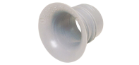

2023年
問題52 下の図のように， 風上側と風下側にそれぞれ一つの開口部を有する建築物における外部の自然風のみによる自然換気に関する次の記述のうち，最も不適当なものはどれか．
（1）外部の自然風の風速が2倍になると，換気量は2倍になる．
（2）換気量は，開口部 ①と②の風圧係数の差の平方根に比例する．
（3）開口部①と②の両方の開口面積を2倍にすると，換気量は4倍になる．
（4）風下側に位置する開口部②の風圧係数は，一般的に負の値となる．
（5）各開口の流量係数は，開口部の形状に関係する．
2023年
問題52 正解（3） 頻出度AAA
両方の開口面積を2倍にすると，換気量も2倍になる（片方の開口面積を2倍にしただけではほとんど変化しない）．
外部風による換気力\(P_w\)［Pa］は，次式によって与えられる． \[P_w=\frac{\rho}{2}V^2(C_1-C_2)\]
\(V\)：風速［m/s］，
\(C_1\)，\(C_2\)：建物の風上，風下の風圧係数，
\(\rho\)：空気の密度［kg/m3］．
風圧係数は実験的に求めるが，2023-52-1図のとおり風の向きで正負の値をとる．

換気量\(Q\)［m3/s］はこれらの換気力を次式に代入して求めることができる． \[Q=\alpha A\sqrt{\frac{2}{\rho}\cdot P}\]
式中の流量係数\(\alpha\)とは，オリフィスや弁などの実流量/理論流量の比のことで，流入口から流出口までの全ての抵抗を考慮した係数である．
流量係数は，通常の窓で0.6～0.7程度となる（理想的なベルマウス，2023-52-1図参照）などの場合に≒1で，1を超えることはない）．

出典 モノタロウ（メーカー：古河電気工業）
https://www.monotaro.com/g/04630739/#
外部風に対する窓などの場合は，開口面積\(A\)［m2］に対して，\(\alpha A\)を有効開口面積ということもできる．
風力による換気量なら， \begin{align} Q&=\alpha A \sqrt{\frac{2}{\rho}\cdot P_w} \notag\\[5pt] &=\alpha A \sqrt{\frac{2}{\rho}\cdot \frac{\rho}{2}\cdot V^2 } \notag\\[5pt] &=\alpha A \sqrt{(C_1-C_2)}\cdot V \notag \end{align}
この式から，風力による換気量は，風速，開口面積に比例し，風圧係数の差の平方根に比例することが分かる．